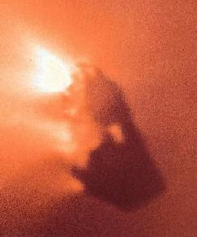
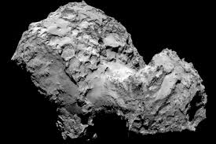
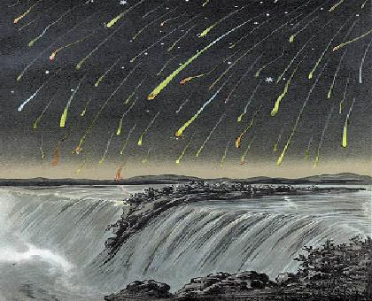
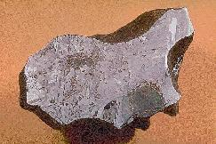

ASTR 1210 (O'Connell) Study Guide
21: INTERPLANETARY MATTER
Comet McNaught at Sunset (2007; Akira Fujii)
- Some of the most beautiful and spectacular astronomial events involve the IPM, for example Comet McNaught (shown above) or the 1833 Leonid meteor storm shown below; and...
- This material poses the greatest natural threat to the survival of life on this planet.
A. General
The IPM contains material that ranges from satellite-sized objects through chunks the size of skyscrapers to tiny dust grains and atoms of gas. The number of objects of a given mass decreases dramatically as the mass increases. The total mass in the IPM is smaller than Jupiter's. But even relatively small bodies traveling at typical orbital speeds of over 50,000 miles per hour can have "large impacts" on other objects, like the Earth. The gas is mostly the expanding outer atmosphere of the Sun (the "solar wind") The dust is composed of tiny (mostly smaller than 0.01 cm diameter) grains of material distributed throughout the ecliptic plane. Much of this has been released from comets as they are heated by the Sun.-
Scattering of sunlight by interplanetary dust is responsible for
the "Zodiacal
Light," which can be easily seen from dark locations at certain
times of the year.
About 50 tons of interplanetary dust rain down on the Earth's
surface every day.
- The "asteroid belt", lying between the orbits of Mars and Jupiter (2-3.5 AU from the Sun). The belt is dominated by rocky or metallic material like the terrestrial planets.
- The "Trans-Neptunian" region: beyond the orbit of Neptune (30 AU). Dominated by icy material, like the satellites of the Jovian planets. This includes the "Kuiper Belt Objects" (discussed in Study Guide 20) and the comets.
- "Asteroids": rocky/metallic bodies ranging down to about 50-m diameter
- "Comet nuclei": icy bodies, mostly between 50-m and 10-km
diameter, which can become "comets" if they enter the inner
solar system
- "Meteoroids": either rocky or icy bodies, less than 50-m diameter
Closeup image of asteroid Lutetia, about 75 miles on its longest diameter (Rosetta Mission, 2010)
B. Asteroids
History
- In the 18th century, Bode's "Law" -- a simple mathematical expression describing the relative spacing of the planetary orbits -- suggested that there should be a planetary orbit lying between Mars & Jupiter. Astronomers began searching for this "missing" planet in 1800.
- The first asteroid, Ceres (975 km diameter), was
discovered in this region in 1801. This inspired a series of
concerted, systematic searches for asteroids, continuing to today.
-
Ceres is large enough and round enough to now be classified as
a "dwarf planet"; but none of the other asteroids are in this
category. Traditionally, however, asteroids were always regarded
as "minor planets." (Well, I said the nomenclature was
messy.)
- As of 2018, there are over 780,000 identified asteroids with known orbits, but there are estimated to be millions of others.
- Asteroids are most easily identified by
their motion with respect to the background stars over
periods of hours. They produce streaks on long-exposure images or
shifts in position between exposures taken at different times.
-
Here is a sample animation of
asteroid detection with an electronic camera [University of Washington].
Here is a video of asteroid Eros'
motion as seen in a small, Earth-based amateur telescope.
Planetary orbits showing location
of Asteroid and Kuiper belts (Addison-Wesley)
Orbits
- Asteroid orbits are usually only modestly elliptical and lie close to the ecliptic plane.
- Most fall in the "main
asteroid belt," lying 2-3 AU from the Sun, between Mars & Jupiter.
(See drawing above).
- The main belt probably represents a region of the protoplanetary nebula where Jupiter's gravity prevented accumulation of a single planetary-sized object.
- There are over 16,000 known Near Earth Asteroids, with orbits that approach Earth's orbit or actually cross it. Over 800 have diameters of 1 km or larger. The best known group are called "Apollos" after the prototype. Because these could collide with Earth, they are potentially dangerous to us. More about this in Study Guide 22.
-
 Here is a remarkable snapshot
plot of the location of known asteroids in the inner
Solar System as of 2019.
Here is a remarkable snapshot
plot of the location of known asteroids in the inner
Solar System as of 2019.
- Although diagrams like this one and dramatic depictions of asteroid belts in movies like Star Wars give the impression of impossibly crowded regions, the actual typical separation between asteroids is over 1 million km --- it would be difficult without telescopes to see other asteroids from the location of a given asteroid.
 Here is a remarkable snapshot
plot
Here is a remarkable snapshot
plotSizes
- < 1 km to almost 1000 km diameter. The three largest asteroids are Ceres (975 km). Pallas and Vesta (both 570 km). There are many more small asteroids than large ones.
Topographic map of asteroid Vesta showing two large
impact basins.
The altitude range (coded blue to red) spans 25
miles At 570 km (353 miles) diameter,
Vesta is the
second largest asteroid. Map from the Dawn Mission (2012).
Compositions
- A crude determination of composition is possible from the reflectance spectrum of an asteroid's solid surface.
- Asteroids are composed of rocky/metallic materials but exhibit several distinct mixtures.
- Most common are carbon-rich ("C") objects, with dark surfaces; others are stony ("S") or metallic ("M").
Shapes
- A handful of asteroids have been imaged by spacecraft or radar, but most shapes are inferred from variations in brightness as asteriods spin
- Asteroids are mostly irregular in shape (see images here), and covered by impact craters
- The more massive asteroids tend to be more spherical
Origin
- Most are fragments from shattered rocky planetesimals from those inner regions of the solar nebula that never accreted into planets. Collisions cause continual "grinding down" to smaller pieces.
- The "C-type" asteroids were the least affected ("processed") by interactions with each other or the pressure/heat of protoplanetary interiors. They have chemical compositions most like the Sun's and yield important information on physical conditions in the early protoplanetary disk before large bodies had accreted.
- Asteroids with substantial metallic inclusions are from larger proto-planetary objects which partially melted & differentiated.
Mosaic image of the surface of asteroid Ceres, the largest
asteroid and the first to be discovered.
The images were taken by the Dawn spacecraft, which entered orbit
around Ceres on 6 March 2015.
The mosaic shows the heavily cratered
surface of Ceres and, on the upper right,
two mysterious "bright spots"
first revealed by Dawn imaging on its approach.
These appear to
be layers of reflective salts, deposited by liquid extruded from
the interior.
Surfaces
- The first good resolved pictures of asteroids were Viking Mission (1976) images of Phobos and Deimos, the satellites of Mars. These are "domesticated" asteroids (i.e. captured by a planet).
- An image of the "wild" asteroid Ida taken by the Galileo mission during its 1993 traverse of the asteroid belt is shown here. Ida is a large, elongated (35 x 13 miles) stony asteroid with a heavily cratered (old) surface and has its own satellite(!), Dactyl (the starlike speck to the right of Ida).
- NEAR
(the Near Earth Asteroid Rendezvous) mission, completed a close-up
study of the asteroid Eros in
2003. This was the first spacecraft to orbit and later
to land on an asteroid.
- Eros is one of the largest "near-Earth" asteroids, coming within 0.15 AU (14 million miles) of Earth. It is potato-shaped (21x8x8 miles) "S"-type asteroid and rotates once in 5 hours.
- NEAR went into orbit around Eros on February 14, 2000 (get it?). It
spent 12 months in orbit around the asteroid (distances 3-100 miles), and
was then directed to soft-land on its surface a year later.
-
 Here is a video of Eros in rotation taken
from orbit by NEAR. Here is
an animation of the last few images returned as NEAR moved to land
on Eros.
Here is a video of Eros in rotation taken
from orbit by NEAR. Here is
an animation of the last few images returned as NEAR moved to land
on Eros.
-
-
The Hayabusa
mission, operated by the Japanese space agency, rendezvoused with
the Near Earth
asteroid Itokawa
in 2005. The spacecraft soft-landed on its surface, obtained a soil sample, and
carried it back to Earth in 2010 -- the first such sample return mission from
an asteroid.
-
Itokawa is a tiny object, just over 1000 feet across. Its feeble
gravity barely holds it together, so it is more like a
"rubble pile"
than a solid planetoid. An image from Hayabusa is shown at right.
The Hayabusa2
mission repeated the sample return feat, carrying material from
the near-Earth asteroid Ryugu. The sample capsule landed
in Australia on 5 December 2020. The mission spacecraft, powered by
efficient solar-electric ion thrusters, is being sent back into
deep space to rendezvous with a different asteroid in 2031.
- The Dawn spacecraft went into orbit around Vesta, the second largest asteroid, in July 2011 and delivered thousands of observations before leaving in August 2012 to rendezvous with Ceres. It reached orbit around Ceres in March 2015. Visit the mission site for a large collection of images and videos.
- NASA's OSIRIS-REx mission is now on its way back to Earth having used a special probe to obtain a sample of the surface of the asteroid Bennu. This is a carbonaceous (carbon-rich) asteroid, one of the first kinds of objects to form in the early planetary disk. Bennu is also a near-Earth Asteroid which has a small, but finite, probability of colliding with Earth at some time in the future.
 Here is a video
Here is a video{kind=link}
{kind=link}
{kind=link}
{kind=link}
{kind=link}
{kind=link}
{kind=link}
{kind=link}
{kind=link}
{kind=link}
{kind=link}
{kind=link}
{kind=link}
{kind=link}
{kind=link}
{kind=link}
Comet West 1975, showing dust (white) and ion (blue) tails (J. Laborde)
C. Comets
The flamelike apparitions in the sky that we call "comets" are the effluent of icy planetesimals from the cold, outer regions of the solar system that begin to evaporate when they get within several Astronomical Units of the Sun, producing a gaseous coma and sometimes tails.{kind=link}
The orbit of Halley's Comet
History
- Early interpretations of comets were as atmospheric exhalations
or supernatural manifestations, which were often thought to be
evil omens.
-
Perhaps the most famous instance of a comet as omen is found in the
Bayeux Tapestry,
which shows Halley's Comet portending the defeat of King Harold
of England by William the Conquerer at the Battle of Hastings in 1066 AD.
(Of course, if Harold had prevailed then the comet would have
been assumed to portend the end of William.)
Another famous, but happier, manifestation shows Halley's Comet (from
its passage in 1301) as the Star
of Bethlehem in Italian painter Giotto's 1304 version of the
Adoration of the Magi.
- 1577: Tycho demonstrates that comets are not in the Earth's atmosphere. Rather, they are astronomical objects, lying beyond the Moon.
- 1704: Halley uses Newton's theory of gravity to
interpret 4 historical comets as the same object viewed during
4 separate passages as it moves in a highly
elliptical orbit with a semimajor axis of 18 AU and a 76 year
period. Halley correctly predicted that the comet would
return in 1759.
-
Halley's work dramatically expanded the horizon of the Solar
System. The comet's aphelion (greatest distance from the Sun) is
35 AU's, over three times farther than Saturn. See the diagram above.
But remember that in 1704, neither Uranus nor Neptune had been
discovered. So, the elongated orbit of Halley's Comet plunged it into
a completely mysterious outer realm that offered the promise of many
discoveries yet to come.
- 19th century forward: Thousands of amateur astronomers become avid comet hunters using small telescopes. Many of the important comets were first identified by amateurs. One of the first serious hunters was Charles Messier (d. 1817), who compiled one of the first catalogs of distant diffuse objects (nebulae, star clusters, and galaxies) so that these wouldn't be mistaken for comets. One of the attractions of comet hunting is that comets are the only kind of astronomical object to be named for their discoverer.
{kind=link}
{kind=link}
{kind=link}
{kind=link}
Orbits
- Main reservoirs: The
location of the largest concentrations of comets can be determined
from tracing their orbits into the outer Solar System. The primary
reservoirs are the Oort Cloud (~spherical, enormous, roughly
50,000 AU in radius) and the
Kuiper Belt (more flattened, centered on the ecliptic plane, ~ 50
AU size). These contain trillions of icy comet nuclei.
Most of these have orbits which never reach the inner Solar System.
-
The total mass in Kuiper Belt and inner Oort Cloud icy objects is
probably many times the combined mass of the main belt asteroids.
- Comet orbits are unlike those of planets and asteroids in two
ways. They are highly elliptical (see the diagram of Halley's
Comet above), and they lie at all angles to the ecliptic plane.
-
Comets obey Kepler's laws, as long as they are not disturbed by
planets. This means that comets which enter the inner Solar System
will move much faster when near the Sun than when they are far from
it. By inspecting the dates on the Halley diagram above, you
will get an impression of the difference.
Most comets have very long periods. An orbital semi-major
axis of 10000 AU's implies a period of 1,000,000 years.
- Only comets with small (< 20 AU) orbits have been observed on more than one solar passage; these are called "periodic" comets. Halley's Comet is the most famous of these.
- Long period orbits can be shifted by the gravitational field of planets, especially Jupiter, into shorter period ones.
- The brightness and size of a comet as seen from Earth depends on both the comet's orbit around the Sun and the location of Earth when the comet is near the Sun, as well as the comet's mass. See this animation of the passage of Hale-Bopp in 1997.
{kind=link}
{kind=link}
{kind=link}
Comet ISON (2013), about 2 weeks
before its destruction at perihelion.
Image by Damian Peach. (Click
for enlargement.)
Structure/evolution
- The nucleus of a comet is best characterized as a "dirty snowball" --- mainly ices with embedded minerals and dust grains; typical size 0.5-10 km diameter, and usually elongated or irregular in shape.
- The surface of the comet nucleus begins to evaporate when < 3 AU
from Sun, producing a gaseous "coma" typically 106 km in
diameter. Here is a diagram showing
the basic anatomy and scale of a typical bright comet.
-
Here is a pictorial
summary of comet evolution.
Here is a
video showing gaseous and dust outbursts from the nucleus of comet
Tempel-1. (From the Deep Impact mission. The blank dot at
the center of the field is an "occulting disk" that prevents
light from the nucleus itself from overwhelming the images.)
- Tail(s) emerge from the coma: these are cold, but they
reflect/fluoresce sunlight and so look "flamelike."
- Tails point roughly away from the sun, not away from the comet's motion. On the outward leg of a comet's orbit, the tails will be leading, not following, the coma.
- The tails of bright comets can be up to 1 AU in length.
- Gas (ion) tail: bluish, straight, complex structure. Dragged back by solar wind.
- Dust tail: dust grains reflecting sunlight, so they are
yellowish-whiteish in color, smooth & broad. Driven back by the
radiation pressure of sunlight. Comet Hale-Bopp (at right) had nicely
separated ion and dust tails.
-
The Stardust
Mission flew through the tail of comet Wild 2, trapping dust
particles in a gel, and returned the sample to Earth in 2006.
Analysis showed the presence of many organic molecules and evidence
for liquid water on the comet nucleus at some time in the past.
- Comet nuclei disintegrate if overheated by the Sun. Some collide with the Sun. Satellite observatories that monitor the sun have picked up hundreds of these comet expirations, many not otherwise detected because they were too faint until they approached the Sun. Here is a video compilation of comet-Sun passages or strikes.
{kind=link}
{kind=link}
{kind=link}
Famous comets
-
Most comets are faint and only visible in telescopes. There are
typically 20 of these observable each year. Brighter, naked-eye
comets are less frequent---one every few years on average. The most
spectacular comets, like Hale-Bopp are usually first-time
visitors to the inner Solar System. Here are some well-known bright
comets:

-
Halley's Comet
(1910,
1986, 2062...).
Halley's Comet was first recorded by the Chinese in 240 BC and has
been seen somewhere in the world on every subsequent passage
(76 year intervals). Although the most recent passage in 1986
was not as close to Earth as some, space technology had
developed to the point where flyby spacecraft could be
deployed to get close-up images of its nucleus:
-
An
"Armada" of 5 spacecraft was sent to rendezvous with the comet. The
data they returned confirmed the dirty snowball model.
The image of the nucleus of Halley's Comet at right, taken by the
European Space Agency's Giotto spacecraft, shows an elongated,
7 mi long object, with a dark crust (reflecting less light than does
asphalt) and gas jets.
Click on the
image for a labeled diagram.
This was the first resolved image of
a comet nucleus. Spacecraft have since obtained images of 5 more.
A montage is shown here.
- Hyakutake 1996
- Hale-Bopp, the "Great
Comet of 1997"
-
Orbit: semimajor axis 260 AU; period about 2400 years
Closest approach to Earth: 1.3 AU (March 22, 1997)
Best Web-available pictures:
W. Pacholka
- Comet ISON, the "Not Quite
Great Comet of 2013"
-
Discovered before its first passage in September 2012 and predicted to
pass within 0.02 AU of the Sun in November 2013, Comet ISON had the
potential to be very bright. Although it was a
beautiful telescopic object at 5th magnitude before perihelion
(closest approach to the Sun), its nucleus apparently disintegrated
near the Sun, and only a few fragments survived, and it never
became a good naked-eye comet.
Here is a remarkable time-lapse video of
ISON about a week before perihelion taken by the STEREO spacecraft.
It shows the rapid changes in the comet's tail induced by gas outflow
from the Sun as well as the behavior of a second comet (Encke) that,
by coincidence, happened to be in the same field.
Here is a time-lapse
video taken by the SOHO spacecraft of ISON passing by the Sun.
{kind=link}
{kind=link}
{kind=link}
{kind=link}
The Deep Impact Mission
- The Deep Impact spacecraft was sent to rendezvous with the 6.5-km
nucleus of comet Tempel-1. It carried an impactor unit that
was launched to collide with the nucleus as a means of probing its
structure. A perfect hit was accomplished at 23,000 mph on July 4,
2005, blasting material off the comet nucleus and allowing analysis of
its composition. The main spacecraft was then redirected to a 2010
rendezvous with the nucleus of comet Hartley-2, for which it provided
close-up
images. Complete information is at
the Deep
Impact Home Page.
Videos of the Tempel-1 impact mission:
-
Operation plan animation (4MB mov)
Launch (4MB mov)
Tempel-1 activity on approach (2MB mpeg)
Impact (70KB mov)
The Rosetta Mission
{kind=link}
- On 6 August 2014, the Rosetta spacecraft was succesfully placed in orbit (19 mile radius) around the nucleus of the (6.5-year) periodic comet Churyumov-Gerasimenko at a distance of almost 4 AU's from Earth. Rosetta was launched in 2004 by the European Space Agency and used a complicated series of gravity-assist flybys of the Earth and Mars in order to achieve the velocity needed to rendezvous with the comet. It orbited the comet, observing it through perihelion and the warm-up/cool-down phases, and has delivered a massive amount of high-resolution imaging and physical measurements of its surface and environment. It sent a probe down to the surface in November 2014, but it landed in shadow, where it cannot readily recharge its batteries. An early surprise was that the 4-mile wide comet nucleus has a remarkable double-lobed shape, more extreme than any other yet studied. See the image at the right (click for enlargement). To end the mission, the orbiter was crashed at low speed into the comet's surface on 30 September 2016, sending back much close-up data in the interim.
D. Meteoroids
 Meteoroids are smaller interplanetary bodies, of both icy and rocky/metallic types. The boundary in size between these and the larger types of IPM bodies is arbitrary, but here we will take it to be 50-m in diameter.{kind=link}
Meteors (aka "shooting stars")
- Meteors are the incandescent trails of tiny meteoroids burning up at high altitudes in the Earth's atmosphere.
- Meteoroids enter Earth's atmosphere at orbital velocities of ~ 50,000-100,000 mph
- Smaller objects burn up, producing a fiery streak and occasionally airborne explosions. A bright meteor has a typical mass of only ~ 1 gram. There are typically about 10 meteors per hour visible from any location under good night sky viewing conditions.
- "Meteor Showers" (concentrations) occur when Earth passes
through the denser debris lying along the orbit of a comet.
E.g.: the Perseids (~ Aug 12; from Comet Swift-Tuttle), the Orionids
(~ Oct 22; from Comet Halley), or the Geminids (from asteroid
Phaethon). Rates can reach over 1000 per hour in rare cases.
- The Leonids (from Comet Tempel-Tuttle) have produced some of the best showers, starting in 1833 with a meteor "storm" (probably over 10000/hour for a short period). The picture above right shows the 1833 storm over Niagara Falls. There were unusually good Leonid showers in 1998 and 2001. (The date of maximum is Nov. 17-18 every year).
{kind=link}
Meteorites
-

- "Meteorites" are meteoroids that survive to reach the
ground; they are rocky or metallic (icy types are destroyed). A
slice through a metallic meteorite is shown at right.
Video (996K
MPEG) of incoming meteorite
- Meteorites are predominantly samples of asteroidal material. They are extremely valuable for the insights they provide into the properties of otherwise unreachable extraterrestrial objects. Chemical analysis of meteorites has enabled astronomers to classify the various important types of asteroids.
- "Carbonaceous condrites" are fragments of "C" asteroids. These are especially important because they yield information on the primitive protoplanetary disk.
- Remarkably, we have found meteoritic samples of the surfaces of both the Moon and Mars (the "SNC" meteorites are from Mars; see Guide 17).
{kind=link}
Impacts
- Although there was much early scientific controversy over the nature of meteorites (including the skepticism of our own Thomas Jefferson, who proclaimed "It is easier to believe that Yankee professors would lie than that stones would fall from heaven"), their extraterrestrial origin was unambiguously demonstrated in 1803 by the French astronomer Jean-Baptiste Biot.
- The notion that giant rocks hitting the Earth at speeds up to 100,000 mph might present a danger dawned only slowly on scientists, however, so that it was 150 years before the magnitude of this threat was clearly recognized. We now understand that meteoroid/asteroid impacts pose the most serious cosmic hazard to human beings, and this is the subject of the next study guide.
Reading for this lecture:
-
Study Guide 21
Bennett textbook, Chapter 12
-
Study Guide 22
Bennett textbook, Chapter 12
Web Links:
-
Java Simulator of Comet & Asteroid Orbits (UMd)
Asteroid Information & Links (Nine Planets site)
NEAR Mission to Asteroid Eros
Dawn Mission to Asteroids Vesta and Ceres Background information on comets and NASA missions to comets
Comet Information (Cometography)
Deep Impact Mission to Comets Tempel-1 and Hartley-2
Rosetta Mission to Comet Churyumov-Gerasimenko Meteor Showers (American Meteor Society)
More information on meteorites
Meteoric Iron and the Shield of Achilles (speculative interpretation of Trojan War weaponry, by Richard Muller) "The Colour Out of Space" by H. P. Lovecraft (best creepy-stuff-in-a-meteorite-
from-outer-space story)
 Previous Guide
Previous Guide
|
 Guide Index
Guide Index
|
 Next Guide
Next Guide
|